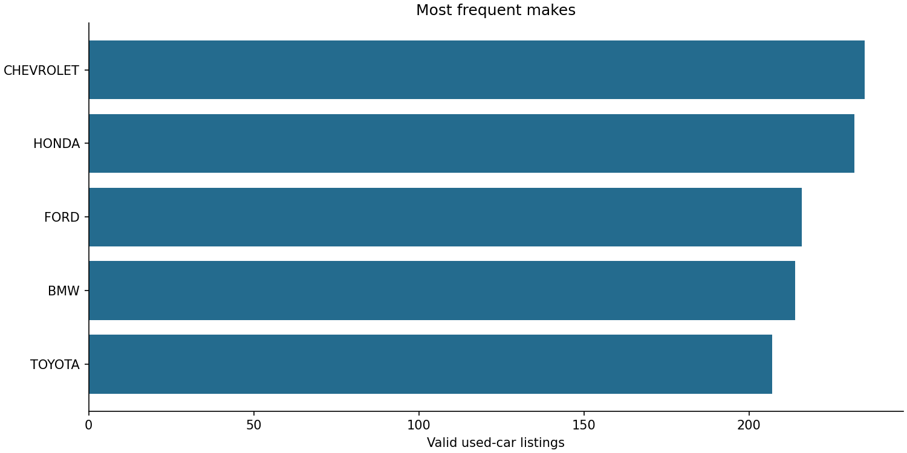
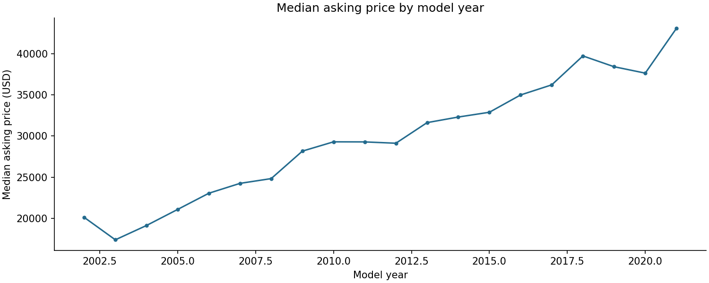

US used-car listing analysis
SYNTHETIC DEMONSTRATION — not Kaggle results
Run: demo-v1 · Seed: 42
Population and data quality
Used listings only, price > 500 USD, model years
1991–2021. Missing horsepower is imputed from train.
Plausible extreme prices and mileage are flagged and retained.
| disposition | rows |
|---|
| input_rows | 1200 |
| invalid_rows | 48 |
| out_of_scope_rows | 36 |
| duplicate_rows | 12 |
| silver_rows | 1104 |
Exclusive primary rejection reasons
| route | primary_reason | count |
|---|
| duplicate | duplicate_listing | 12 |
| invalid | invalid_mileage | 12 |
| invalid | invalid_price | 12 |
| invalid | missing_make | 12 |
| invalid | unknown_new_flag | 12 |
| out_of_scope | new_vehicle | 12 |
| out_of_scope | price_below_scope | 12 |
| out_of_scope | year_outside_scope | 12 |
Market overview
| listings | approximate_vehicles | mean_price_usd | median_price_usd | mean_mileage_miles | min_model_year | max_model_year |
|---|
| 1104 | 1098 | 29,723.96 | 29,765.00 | 91,629.22 | 2002 | 2021 |


Models
Selected using validation RMSE: ridge. Models use 1,104 vehicle-group-sampled listings.
| model | rows | mae_usd | rmse_usd | r2 |
|---|
| Train-mean baseline | 158 | 7,542.73 | 9,134.89 | -0.00 |
| ridge | 158 | 1,293.14 | 1,689.52 | 0.97 |
Target: advertised asking price. MAE and RMSE use USD. These are not sale-price estimates.
Exploratory K-Means segments
| cluster | listings | mean_price_usd | mean_mileage_miles | mean_model_year |
|---|
| 0 | 382 | 20,835.02 | 156,020.76 | 2,005.20 |
| 1 | 345 | 38,886.59 | 25,930.92 | 2,018.15 |
| 2 | 377 | 30,345.89 | 86,505.47 | 2,011.50 |
k selected by in-sample squared-Euclidean silhouette; segment labels have no natural order.
Scope and limitations
Historical advertised inventory is not a representative sample of
all US transactions. Source collection: CarGurus inventory, September 2020. No temporal generalization
claim is made. VIN grouping reduces repeated-vehicle leakage; missing VINs use listing/hash fallback.
Descriptions, dealer details and URLs are excluded from predictive features.
Execution: local Spark, 3.5.7;
Python 3.11.17.
Input SHA-256: dc6dd985c37bac9d5b6f055e639275fdbcfed32a0c3afc78a78d08abda904c77.
Dataset and usage notice